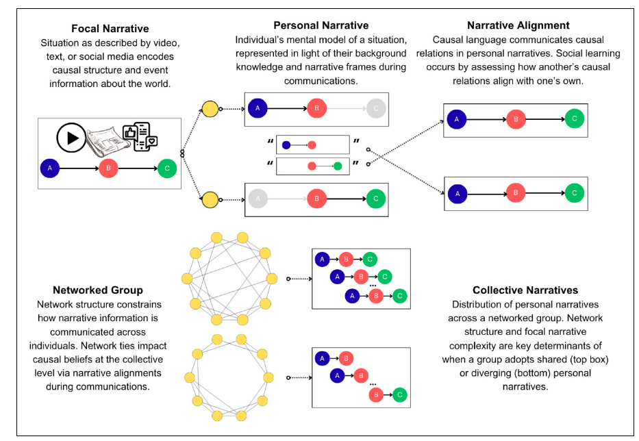
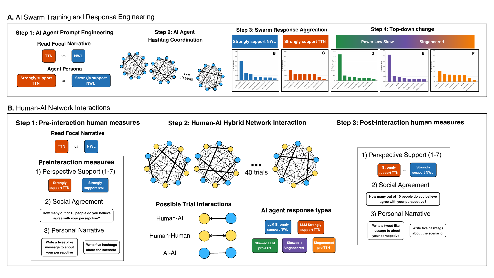
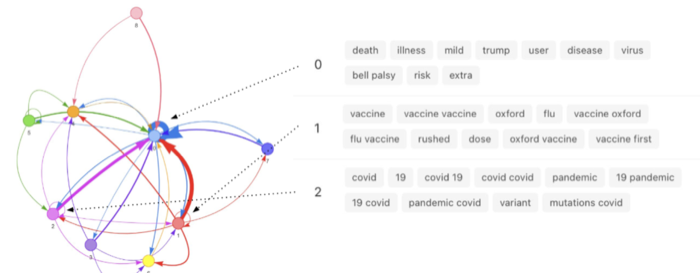
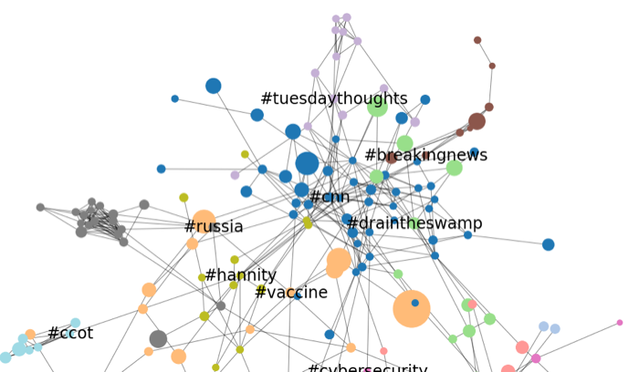
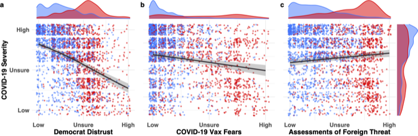

How Artificial Intelligence Shapes Human Narratives
The narrative agency framework explains how AI impacts the ways people learn, communicate, and shape narratives.
I study how emerging technologies shape people’s ability to learn, communicate, and influence the narratives guiding their lives and communities. My current research centers on narrative agency and human–AI group alignment, using network experiments, computational models, and language analysis to understand how emerging technologies shape group communication, creativity, and shared understanding. This work extends my longstanding interests in health psychology, political organizing online, and group communication. I apply these findings through new media development, creating interactive educational materials, games, and community platforms that help people learn complex information, share their experiences, and shape emerging technologies together.

The narrative agency framework explains how AI impacts the ways people learn, communicate, and shape narratives.

The structure of a human-only group’s online communication network impacts which features of complex information people communicate and think about.

I have developed dynamically evolving AI agents that infer human belief states from language and adapt their messages during communication, and we are actively testing them. Preliminary findings show that concentrated AI signals can steer shared language.

Our simulations show that LLM-based agents can exhibit partial convergence in networked coordination tasks, but often fall short of replicating the onset of group coherence observed in human groups.

A causal language pipeline that extracts and visualizes belief networks from text, applied to COVID-19 vaccine discussions and shifts in personal narratives after networked communication. Vaccine discussions linked vaccination with both anticipated protection and feared harms.

I develop interactive educational media from crowdsourced arguments shown to shift attitudes about vaccines, immigration, and racial inequality, and am building repositories of evidence-tested materials.

I study the promise and pitfalls of hashtag activism: how online networks connect personal narratives to collective organizing, and how concentrated influence and fragmented discussion can limit that promise. In QAnon, broad participation coexisted with concentrated narrative sources.

I developed preregistered surveys and Bayesian predictive models to identify how political distrust, vaccine fears, and economic concerns related to COVID-19 skepticism before and during the first U.S. wave. Distrust predicted skepticism beyond political ideology.